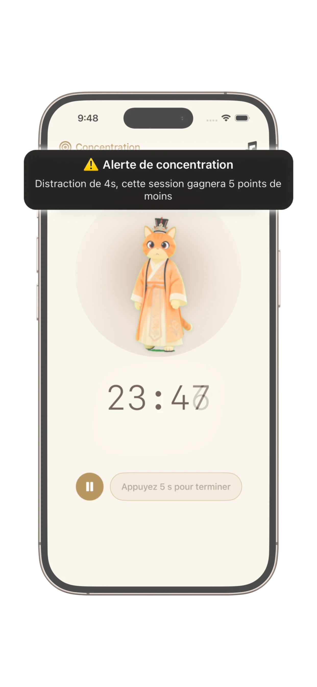
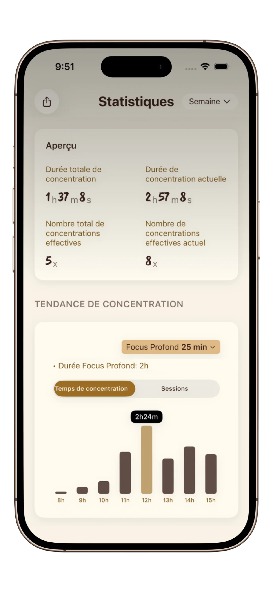
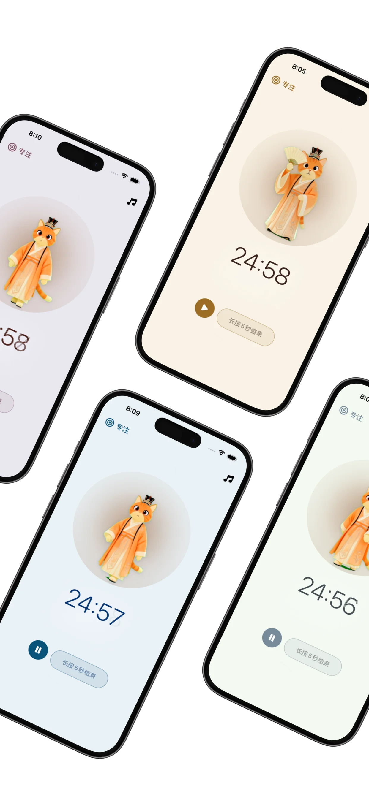

Un espace pour une concentration profonde
Interface épurée conçue pour une concentration ininterrompue. Pomodoro ou concentration libre — minimaliste, apaisant et efficace.

Le minuteur Pomodoro le plus adorable pour suivre vos sessions, gagner des récompenses, développer vos habitudes de concentration — avec un compagnon félin apaisant.
Commencez votre parcours de concentration
Découvrez comment PurrrrrFocus vous aide à développer votre concentration, suivre vos progrès et rester motivé.
Interface épurée conçue pour une concentration ininterrompue. Pomodoro ou concentration libre — minimaliste, apaisant et efficace.

Le mode de concentration d'élite décourage doucement les distractions, vous aidant à protéger votre travail le plus important.

Séries, heures totales et croissance — transformez votre concentration quotidienne en amélioration mesurable.

Développez des habitudes avec une présence apaisante à vos côtés. Encouragement constant, sans pression.

Thèmes minimalistes d'inspiration orientale conçus pour favoriser la clarté et une concentration tranquille.
Un minuteur Pomodoro vous aide à rester concentré en découpant le travail en sessions structurées avec de courtes pauses. Cette méthode améliore la productivité, réduit la fatigue mentale et facilite le démarrage et le maintien d'un travail en profondeur.
PurrrrrFocus est conçu pour les étudiants, les créateurs et tous ceux qui luttent contre les distractions. Avec une interface apaisante, des modes de minuterie flexibles et un retour visuel doux, il favorise la concentration profonde, la construction d'habitudes et des flux de travail adaptés au TDAH.
Contrairement aux applications de productivité complexes, PurrrrrFocus reste simple. Pas d'encombrement, pas de pression—juste un espace épuré pour se concentrer, avec des thèmes optionnels et une présence de compagnon douce.
Vrais retours de nos utilisateurs sur l'expérience PurrrrrFocus.
"PurrrrrFocus est absolument incroyable ! C'est parfait pour les enfants et moi — mignon et pratique, nous aidant à faire un peu de progrès chaque jour. C'est excellent pour améliorer la concentration, et je continuerai à l'utiliser à long terme pour devenir une meilleure version de moi-même."
"Adorable ! J'adore la connexion émotionnelle avec les compagnons félins !"
"Oh mon dieu, c'est adorable ! J'adore les thèmes d'inspiration chinoise."
Dans ma carrière précédente en SaaS, j'étais piégé dans un cycle sans fin de plus de 100 groupes de discussion et de bots IA incessants. Je sentais ma capacité de réflexion profonde s'éroder jour après jour. Purrrrrfocus est né de mon propre combat pour reprendre mon cerveau au bruit numérique.
PurrrrrFocus est un minuteur Pomodoro minimaliste conçu pour vous aider à rester concentré, réduire les distractions et construire des habitudes de travail régulières.
Oui. PurrrrrFocus est conçu avec la simplicité et le calme en tête, pour réduire la surcharge et soutenir des sessions de concentration structurées pour les utilisateurs TDAH.
Absolument. Il convient à l'étude, au travail en profondeur et aux routines de productivité quotidiennes.
Oui. Vous pouvez consulter vos sessions de concentration, suivre le temps et construire des habitudes régulières au fil du temps.
L'application propose les fonctionnalités de base gratuitement, avec des fonctionnalités premium optionnelles pour une utilisation avancée.
Téléchargez PurrrrrFocus et renforcez votre discipline, une session à la fois.
Adoré par les utilisateurs recherchant une concentration calme et productive !
Utilisée par des étudiants, des créateurs et des personnes TDAH aux États-Unis, en Europe et en Asie.